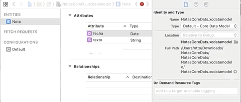

3.3 entidades
Las entidades¶
Crear las entidades (1 punto)¶
Las entidades son los objetos que queremos hacer persistentes en nuestra aplicación. Debemos especificar sus propiedades (nombre y tipo) y como veremos en sesiones posteriores podemos establecer relaciones con otros objetos.
Para gestionar las entidades debemos editar el archivo xcdatamodeld. En el editor visual de Xcode podemos, entre otras cosas, añadir entidades. Vamos a crear la única entidad que necesitamos en nuestra aplicación: Nota. Para ello seguir estos pasos:
- Abrir el modelo de datos: el archivo del proyecto con el mismo nombre que el proyecto y extensión
xcdatamodeld. - Añadir una entidad pulsando el botón
Add Entityde la parte inferior. Creará una nueva entidad llamada por defectoEntity. Podemos cambiarle el nombre haciendo doble clic sobre él. - Cambiarle el nombre a la entidad a
Nota - Añadir los atributos pulsando sobre el botón
+de la secciónAttributes. Para cada atributo hay que especificar su nombre y tipo. Añadiremos dos atributos,fecha, de tipoDateytextode tipoString
IMPORTANTE: Los nombres de las entidades deben comenzar por mayúscula y los nombres de los atributos por minúscula. El editor no nos dejará hacer lo contrario.

Selecciona la entidad Nota en el editor y selecciona el Data Model Inspector en el panel de la derecha de Xcode (el tercer icono). En el apartado Class verás los datos de la clase Swift que Xcode va a autogenerar para representar a tu entidad.

Por defecto:
- El nombre es el mismo que la entidad
- La clase se crea en el "Global Namespace", lo que quiere decir que no te harán falta
imports para usarla - En el campo
codegendebería aparecer seleccionadoClass definition, ese es el método que usa Xcode para generar el código , lo veremos con más detalle en la siguiente sesión.
Crear datos persistentes (2 puntos)¶
Aquí nos ocuparemos de crear y guardar una nueva nota. Por el momento no se podrán editar ni borrar notas, para simplificar la aplicación, únicamente crear notas nuevas.
La interfaz de usuario para crear notas
En la (por el momento) única pantalla de la aplicación añadir los siguientes componentes:
- Un campo de texto de varias líneas (
text view) para escribir la nota en sí. - Una etiqueta (
label) para mostrar la fecha y hora de la nota - Un par de botones, uno para crear una nueva nota en blanco y otro para guardar la nota actual
- Una etiqueta para mostrar mensajes al usuario
Una vez añadidos los componentes, hay que crear un outlet para las dos etiquetas y el campo de texto y así poder acceder a/cambiar su contenido por código. Recordad que hay que hacer Ctrl+Arrastrar desde el componente hasta el archivo donde queremos crear la propiedad (en nuestro caso ViewController.swift).
Además hay que crear un action para cada botón, para poder ejecutar nuestro código cuando se pulsen (con Ctrl+Arrastrar igual que antes). Debemos vincular los action al evento Touch up inside, que es el que aparece por defecto.
El código que implementa “crear nueva nota”
Debes implementar el código del action del botón "nueva nota" y simplemente limpiará la etiqueta de la fecha, el campo de texto de varias líneas y la etiqueta para mensajes al usuario, asignándoles a las tres la cadena vacía.
El código que implementa el guardado
En el código del action asociado al botón de “guardar” debemos tomar el valor del campo de texto, crear una nueva nota con este texto y la fecha y hora actual y hacerla persistente. Además actualizaremos la etiqueta con la fecha y hora actual para que muestre cuándo se ha guardado la nota. Vamos a ver esto paso a paso.
Para crear un nuevo objeto persistente debemos solicitárselo al contexto, ya que este debe gestionar su ciclo de vida y si lo creáramos nosotros llamando al inicializador el contexto desconocería de su existencia.
Lo primero por tanto es obtener la referencia al contexto de persistencia. Como hemos visto en la sección anterior, en la plantilla de Xcode se guarda todo lo de Core Data en el application delegate, por lo que vamos a obtenerlo de ahí
En todo el tema vamos a suponer que estamos desarrollando para iOS>=10 y que por tanto vamos a poder usar la clase
NSPersistentContainer.
En el action asociado al botón de "guardar" añade el siguiente código:
1 2 3 4 5 6 7 | //No te olvides de añadir este import al principio de la clase import CoreData guard let miDelegate = UIApplication.shared.delegate as? AppDelegate else { return } let miContexto = miDelegate.persistentContainer.viewContext |
Hay que recalcar de nuevo que el hecho de que el
viewContextesté dentro del delegate no es propio de Core Data en sí, sino de la plantilla generada por Xcode para inicializar el stack.
Para crear un nuevo objeto necesitamos relacionarlo con el contexto de persistencia. La clase Nota generada por Xcode tendrá un inicializador que acepta como parámetro el contexto:
1 2 3 | let nuevaNota = Nota(context:miContexto) nuevaNota.fecha = Date() nuevoNota.texto = "<asignar aquí el contenido del text view>" |
Si Xcode da error con el código anterior y no reconoce la clase
Notapuedes probar a recompilar el proyecto conProduct > Clean Build Foldery luegoProduct > Build. A veces se genera el código paraNotapero no se compila o a veces no se ha generado.
Finalmente guardamos el objeto en el almacenamiento persistente. Esto se hace guardando el contexto, que guardará todos los objetos pendientes. El método save puede lanzar una excepción que debemos tratar de algún modo, en este ejemplo usamos un do...catch
1 2 3 4 5 | do { try miContexto.save() } catch { print("Error al guardar el contexto: \(error)") } |
El método de utilidad llamado
saveContextde la plantilla generada por Xcode hace algo muy similar a lo anterior, aunque genera un error fatal que causa la terminación inmediata de la aplicación.
Faltaría actualizar la etiqueta con la fecha y hora de la nota para que refleje la fecha asignada, y también actualizar la etiqueta con el mensaje al usuario que indique "nota guardada" o algo similar. Escribe el código necesario para hacer esto.
Tal y como está ahora el código, cada vez que pulses sobre
Guardarse creará una nueva nota, así que aunque no modifiques el texto si pulsas varias veces tendrás varias notas, que serán iguales en contenido, aunque no con la misma fecha/hora). No es necesario que soluciones esto, déjalo así por el momento.